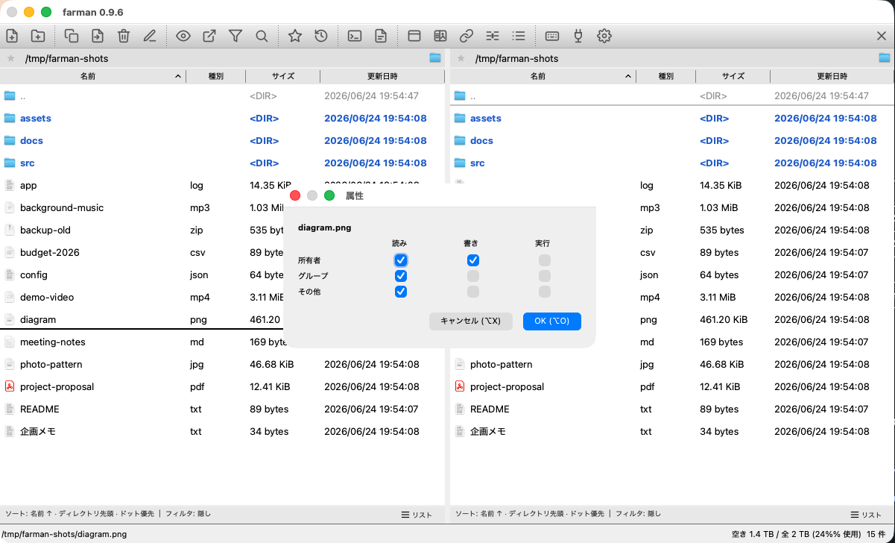
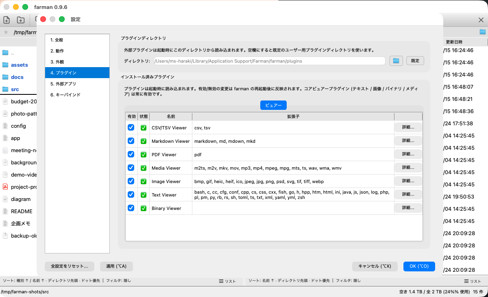
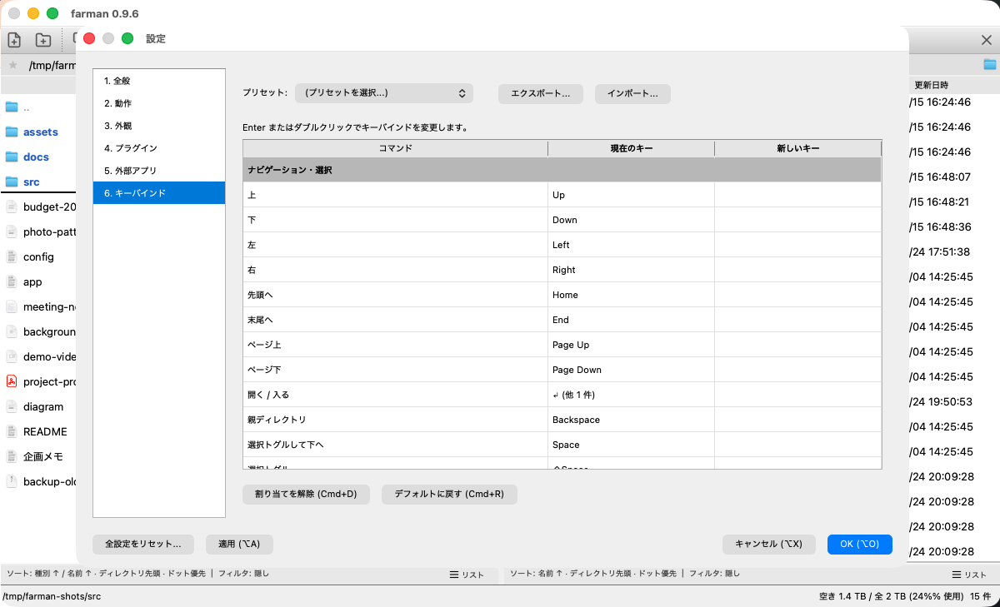
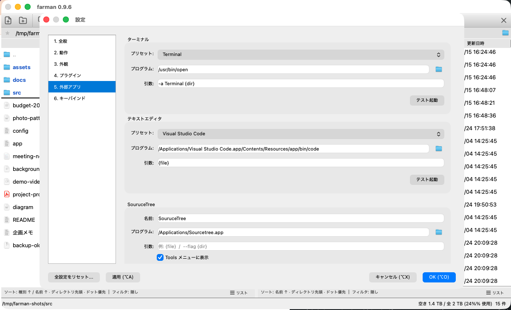

farman マニュアル
基本操作からキーバインド、各機能の使い方まで。
下の検索ボックスにキーワードを入力すると、該当する項目だけに絞り込めます
（例: コピー / アーカイブ / Ctrl+R）。
「」に一致する項目はありません。
基本操作
- farman は左右にペインを並べるデュアルペインのファイラです。一方を「コピー元」、もう一方を「コピー先」として、ペイン間でファイルをやり取りします。
- 操作対象はアクティブペイン（カーソルがある側）。
Tabや左右キーの端でペインを切り替えます。 - カーソル移動は
↑↓、ディレクトリに入るのはEnter、親ディレクトリへ戻るのはBackspace。 - 選択は
Space（選択して下へ）/Shift+Space（移動なしで選択）。iで選択反転、Ctrl+Aで全選択。 Shift+文字で、その文字を頭文字とする次のファイルへカーソルジャンプ（連打で次の一致へ）。- レイアウトは デュアルペイン（2 画面）/ シングルペイン（1 画面）/ プレビュー の 3 種類。
Ctrl+Oでデュアル / シングルを切替、プレビューはツールバー / 設定から。（設定・コマンドでは「2 画面 / 1 画面」とも表記） - macOS では
Ctrlは⌘(Command) に割り当てられます。


Ctrl+O で切替
キーバインド一覧（デフォルト）
すべて設定の「キーバインド」で変更できます（設定は Ctrl+,。ただし Tab と Shift+文字は固定）。macOS の Ctrl は ⌘。
ナビゲーション・選択
| キー | 動作 |
|---|---|
| ↑ / ↓ | カーソル移動 |
| ← / → | ペイン端で親ディレクトリ / 反対ペインへ |
| Home / End | 先頭 / 末尾へジャンプ |
| PgUp / PgDown | ページ単位で移動 |
| Enter | ディレクトリに入る / ファイルをビュアーで開く |
| Backspace | 親ディレクトリへ移動 |
| Tab / Shift+Tab | フォーカス循環（★→アドレス→📁→リスト→モード）。端で対向ペイン / プレビューへ |
| Shift+文字 | その文字で始まる次のファイルへジャンプ（連打で次の一致へ） |
| Space | 選択をトグルしてカーソルを下へ |
| Shift+Space | 選択をトグル（カーソル移動なし） |
| i | 選択を反転 |
| Ctrl+A | 全選択 |
ファイル操作
| キー | 動作 |
|---|---|
| c | 選択ファイルを反対ペインへコピー |
| m | 選択ファイルを反対ペインへ移動 |
| k | 新規ディレクトリ作成 |
| n | 新規ファイル作成 |
| d | 削除（ゴミ箱 / 完全削除は設定・確認ダイアログで選択） |
| r | リネーム |
| Ctrl+R | 一括リネームダイアログ |
| Ctrl+C | カーソル / 選択ファイルの絶対パスをクリップボードへコピー |
| a | 属性変更 |
| p | 選択ファイルをアーカイブ化（圧縮） |
| u | カーソル位置のアーカイブを展開 |
| Shift+Enter | OS 既定アプリで開く / 実行（ダブルクリックも同じ） |
| Alt+Enter | プロパティダイアログ |
ビュアー・表示・ペイン
| キー | 動作 |
|---|---|
| v | ビュアーで開く |
| Ctrl+Enter | 任意のビュアー（Text / Image / Binary）を選んで開く |
| s | このペインのソート・フィルタ設定 |
| / | 即時フィルタ（Quick Filter）の表示 |
| Ctrl+O | シングル / デュアルペイン切替 |
| Ctrl+L | ログペインの表示切替 |
| y | 同期ブラウズの切替 |
| Ctrl+→ / Ctrl+← | ペインのディレクトリを反対側へ同期 |
| f | ファイル検索ダイアログ |
| Ctrl+P | プレビューペインの表示切替 |
| Ctrl+1〜Ctrl+4 | 表示モード切替（リスト / サムネイル 小・中・大） |
| = | ディレクトリ比較ダイアログ |
ブックマーク・履歴・アプリ
| キー | 動作 |
|---|---|
| b | 現在のパスをブックマーク登録 / 解除（トグル） |
| Ctrl+B | ブックマーク一覧 |
| h | ディレクトリ履歴 |
| t | ターミナルを開く（外部アプリ連携） |
| e | エディタで開く（外部アプリ連携） |
| Ctrl+, | 設定ダイアログ |
| ? | キーバインド一覧の表示 |
| Ctrl+Q | 終了 |
| Ctrl+Shift+P | プラグイン設定を開く |
ファイル操作
- コピー / 移動（
c/m）: 選択（無選択ならカーソル行）を反対ペインへ。確認ダイアログでコピー先・上書き時の挙動（都度確認 / 上書き / スキップ / リネーム）を指定できます。
コピー / 移動の確認（上書き時の挙動を指定） - 削除（
d）: ゴミ箱に入れる / 完全削除を確認ダイアログで選べます。
削除の確認（ゴミ箱 / 完全削除） - リネーム（
r）: カーソル行の名前を変更。 - 一括リネーム（
Ctrl+R）: テンプレート + 連番 + 正規表現置換に対応。適用前にプレビューで結果を確認できます。
一括リネーム（テンプレート + 連番 + 正規表現、適用前にプレビュー） - 新規作成:
kでディレクトリ、nでファイル。 - パスのコピー（
Ctrl+C）: カーソル / 選択ファイルの絶対パスをクリップボードへ（複数は改行区切り）。 - 属性変更（
a）/ プロパティ（Alt+Enter）: パーミッションや詳細情報の確認・変更。
属性変更（パーミッションなど） 
プロパティ（詳細情報） - OS 既定アプリで開く（
Shift+Enterまたはダブルクリック）: 関連付けられたアプリでファイル / ディレクトリを開きます。
アーカイブ
- 作成（
p）: 選択ファイルを zip / tar / tar.gz / tar.bz2 / tar.xz で圧縮。圧縮レベルや zip の AES-256 パスワード暗号化を指定できます。
アーカイブ作成（形式・圧縮レベル・パスワード暗号化） - 展開（
u）: カーソル位置のアーカイブを展開。暗号化 zip はパスワード入力で展開できます。 - アーカイブ内ブラウジング: アーカイブを普通のフォルダのように開いて、中を移動・閲覧できます（パスは
archive.zip!/inner/のように表示されます）。
アーカイブ内ブラウジング（フォルダのように開いて中を閲覧） - 選択抽出: アーカイブ内で必要なファイル / ディレクトリだけを選んで取り出せます。
検索・ナビゲーション
- ファイル検索（
f）: バックグラウンドで再帰検索し、結果から直接ジャンプできます。
ファイル検索（バックグラウンドで再帰検索、結果からジャンプ） - 即時フィルタ（
/）: 現在のディレクトリの表示を、入力した文字で素早く絞り込みます。 - ブックマーク:
bで現在地を登録 / 解除、Ctrl+Bで一覧。一覧には、登録したお気に入りに加え、マウント済みのドライブ（外部ディスク・ネットワークドライブ）が自動検出されて表示されます。
ブックマーク一覧（お気に入り + 自動検出されたドライブ） - ディレクトリ履歴（
h）: これまで開いたディレクトリの履歴から移動。
ディレクトリ履歴 - アドレスバー: パスを直接入力して移動（パス補完あり）。
表示モード・ペイン
- サムネイル表示: リスト / 小・中・大の 4 段階（
Cmd/Ctrl+1〜4）。画像や PDF の 1 ページ目に対応。
サムネイル表示（リスト / 小・中・大の 4 段階） - プレビューモード（Quick View）: 片側でファイルを選ぶと、もう片側に内容を即プレビュー。
プレビューモード（Quick View）— 片側で選ぶともう片側に即プレビュー - ディレクトリ比較: 左右ペインの差分を行ごとに色分け。コピー後も比較状態を維持します。

ディレクトリ比較（左右ペインの差分を色分け） - 同期ブラウズ（
y）: 片方のペインを移動すると、もう片方も相対的に追従します。 - ディレクトリ同期（
Ctrl+→/Ctrl+←）: 一方のペインのパスを反対側に合わせます。 - ソート・フィルタ（
s）: ペインごとの並び順・表示フィルタを設定（このディレクトリ専用としても保存可）。
ソート・フィルタ（並び順・表示フィルタをペインごとに） - ログペイン（
Ctrl+L）: 操作ログの表示切替。
設定
Ctrl+, で設定ダイアログを開きます。左側のカテゴリ（全般 / 動作 / 外観 / プラグイン / 外部アプリ / キーバインド）で各設定を切り替えます。
- 外観: テーマ、アドレスバー、カーソル、カテゴリ別ファイル色、行高など。

設定ダイアログ（外観） - プラグイン: インストール済みのビュアープラグインを種別タブで一覧表示します。各行の「詳細...」から、区分・プラグイン ID・パス・有効 / 無効・優先度・対象拡張子・各ビュアーの既定設定を確認・変更できます。ユーザー作成の外部ビュアープラグイン（.dylib / .so / .dll）も、指定したプラグインディレクトリから読み込めます。

設定 → プラグイン（インストール済み一覧・詳細） - キーバインド: すべてのショートカットを変更可能。デフォルトに戻す、Total Commander 風などのプリセット選択、割り当て解除もできます。

設定 → キーバインド - 外部アプリ: ターミナル（
t）・エディタ（e）などの起動コマンドを登録。プレースホルダで現在のパスや選択ファイルを渡せます。
設定 → 外部アプリ - 言語: 日本語 / 英語（Auto は OS 設定に追従）。
- 設定のエクスポート / インポート: ブックマーク・カスタムコマンド・カラースキームを含む全設定を 1 ファイルで他マシンへ移行できます。
設定ファイルの場所: macOS ~/Library/Preferences/Farman/farman/settings.json / Linux ~/.config/Farman/farman/settings.json / Windows %APPDATA%\Farman\farman\settings.json
同梱公式ビュアー
v でビュアー起動、Ctrl+Enter でビュアーを選択。インライン表示 / 別ウィンドウのどちらにも対応し、全文検索が使えます。
| ビュアー | 対応形式（拡張子） | 主な機能 |
|---|---|---|
| テキスト | txt, log, c / cpp / h, py, js, ts, java, json, xml, yml, ini, sh / bash / fish など | 文字エンコード自動判定、行番号、ワードラップ、全文検索 |
| 画像 | png, jpg, jpeg, gif, bmp, svg, webp, ico, tiff, tif, psd, heic, heif | ズーム / Fit、透明背景チェッカー、GIF・WebP アニメ、90° 回転、Info（Exif・ICC・DPI）、PSD 合成プレビュー |
| 動画 / 音声 | 動画: mp4, mov, webm, mkv, avi, wmv, mpeg, m2ts, ts など／音声: mp3, flac, wav, aac, ogg, wma など | 再生、シーク（バーのクリックでその位置へ即移動）、音量、ループ、フルスクリーン、Info（メタデータ） |
| Markdown | md, markdown, mdown, mkd | 整形プレビュー / ソース表示の切替、表・タスクリスト、全文検索 |
| ページ送り、ズーム / Fit、全文検索 | ||
| CSV・TSV | csv, tsv | 区切り自動判定、セル検索、先頭行をヘッダ扱い、巨大ファイルの遅延ロード |
| バイナリ | 上記いずれにも該当しない任意のファイル | 16 進ダンプ（アドレス列・文字列列のカラーリング） |
HEIC / HEIF 画像は、macOS は OS 標準デコーダ、Windows・Linux は同梱の libheif で表示します。
各ビュアーの既定設定（対象拡張子、表示方法など）は 設定 → プラグイン で対象のビュアーを選び 「詳細」 を開いて変更できます（テキストの既定エンコード、画像の Fit / ズーム、PDF の表示方法、CSV の区切り、メディアの音量・自動再生 など）。
拡張子の対応付けについて: 同じ拡張子を複数のビュアーが対象にしている場合、優先度の高いビュアーが選ばれます（各ビュアーが宣言する対応拡張子の中から優先度で解決）。特定の拡張子を必ず特定のビュアーに固定する「先勝ち」の上書き指定はありません。狙いどおりに開かない場合は、優先したいビュアー側に拡張子を追加し、競合する側からは外してください。


インストールと更新
- ダウンロード: トップページのダウンロード または GitHub Releases から。各アセットに
.sha256チェックサム付き。 - macOS: Apple Silicon (arm64) 向け
.dmg。Developer ID 署名 + 公証済みで、Gatekeeper 警告なしに起動できます。 - Windows: インストーラ
.exeまたはポータブル.zip（x64）。現状コード署名は未対応です。 - Linux:
.AppImageまたは.deb（x86_64）。 - 自動アップデート: 起動時に新版をチェックし、ワンクリックでダウンロード + SHA256 検証 + インストール。
- アップデート内容の表示: アップデート後の初回起動時に変更内容をダイアログで表示します。ヘルプ → アップデート内容... からいつでも再表示できます。
この内容は farman の最新版に基づいています。キーバインドは初期設定（Default）の値です。 不明点や記載の誤りは GitHub Issues へ。